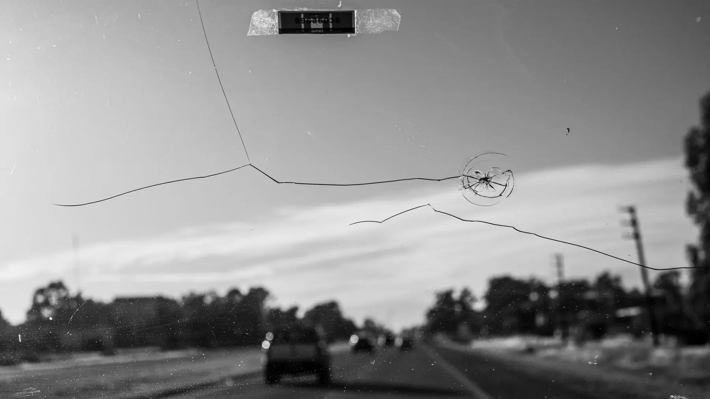
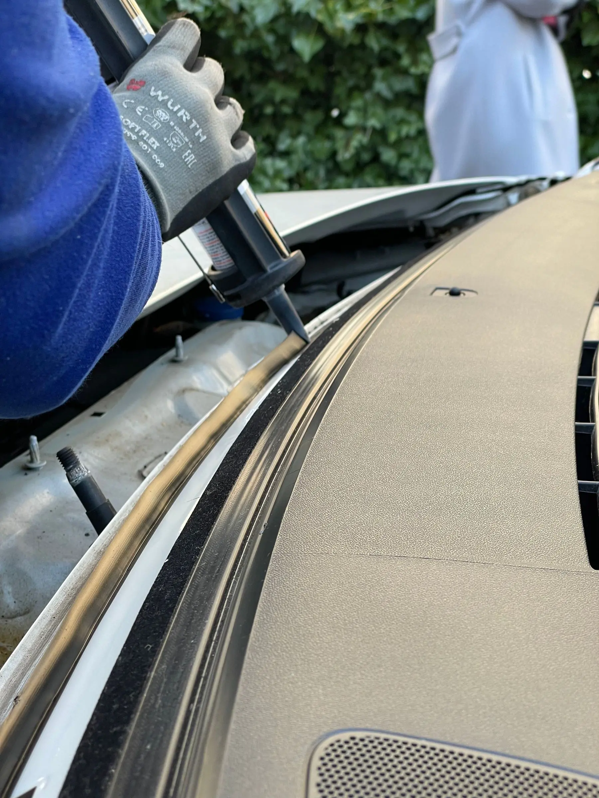

WHAT'S INCLUDED
WINDSHIELD REPLACEMENT & CHIP REPAIR.
- Windshield / Auto Glass Replacement
- Windshield Chip Repair
- In-shop or mobile request routing
- Cars, light-duty trucks and semi-trucks
AUTO GLASS
Tires 4 Less offers windshield replacement, windshield chip repair and Auto Glass service for cars, light-duty trucks and semi-trucks. Customers can request in-shop or mobile service; exact mobile coverage is confirmed from the vehicle location.
Choose a shop for in-shop service. If you select Mobile, the request asks for the vehicle's current location.
WHAT'S INCLUDED
Windshield / Auto Glass Replacement for cars, light-duty trucks and semi-trucks, in shop or mobile.
SERVICE DETAILS
Windshield / Auto Glass Replacement and Windshield Chip Repair are separate service paths. The specific damage has to be assessed before the shop can confirm whether repair or replacement is appropriate. Send the vehicle and damage description so the team has the right context.
SERVICE DETAILS
Auto Glass can be requested In Shop or Mobile for cars, light-duty trucks and semi-trucks. When Mobile is selected, provide the vehicle’s current location so the team can confirm whether the job is within current mobile coverage.
SERVICE CONTEXT
For Mobile Auto Glass, the current vehicle location is part of the request because the team has to confirm whether the job fits the active mobile coverage. For In-Shop service, choose the Tires 4 Less location that should handle the request. Exact mobile coverage should be confirmed rather than assumed from a city name alone.
Include the vehicle year, make and model and describe whether the concern is a chip, crack or other glass damage. The shop can then confirm whether Chip Repair or Replacement is the appropriate next step for that specific damage.
SERVICE VISUALS
Follow the service from the main vehicle view through two supporting work details, keeping the process easy to scan before you request service.
 WINDSHIELD / VEHICLE
WINDSHIELD / VEHICLE
CHIP / DAMAGE
IN-SHOP / MOBILE SERVICEHOW IT WORKS
Select Windshield / Auto Glass Replacement or Windshield Chip Repair.
For Mobile, provide the vehicle current location so coverage can be confirmed.
Include vehicle details, damage notes and a preferred time for confirmation.
CHIP OR REPLACEMENT
A small chip and a larger crack do not automatically follow the same service path. The location, size and condition of the damage matter, so send a clear description and vehicle information rather than choosing a repair outcome based only on appearance. Tires 4 Less can then confirm whether the request belongs in Windshield Chip Repair or Windshield / Auto Glass Replacement.
SHOP OR MOBILE
In-Shop requests use the selected Tires 4 Less location. Mobile requests use the vehicle’s current location, because the team needs that address before confirming active mobile coverage. The service scope includes cars, light-duty trucks and semi-trucks, but the exact vehicle and job still have to be confirmed from the request details.
COMMON QUESTIONS
Windshield / Auto Glass Replacement and Windshield Chip Repair are confirmed services.
The confirmed scope includes cars, light-duty trucks and semi-trucks.
Yes. Choose Mobile and provide the vehicle current location. Exact mobile coverage is confirmed from that location.
No guarantee should be made before the specific damage is assessed.
Use the dedicated Auto Glass request and choose Replacement or Chip Repair plus In Shop or Mobile.
READY?
Choose the location, send your vehicle details and tell us your preferred time.
START SERVICE REQUEST